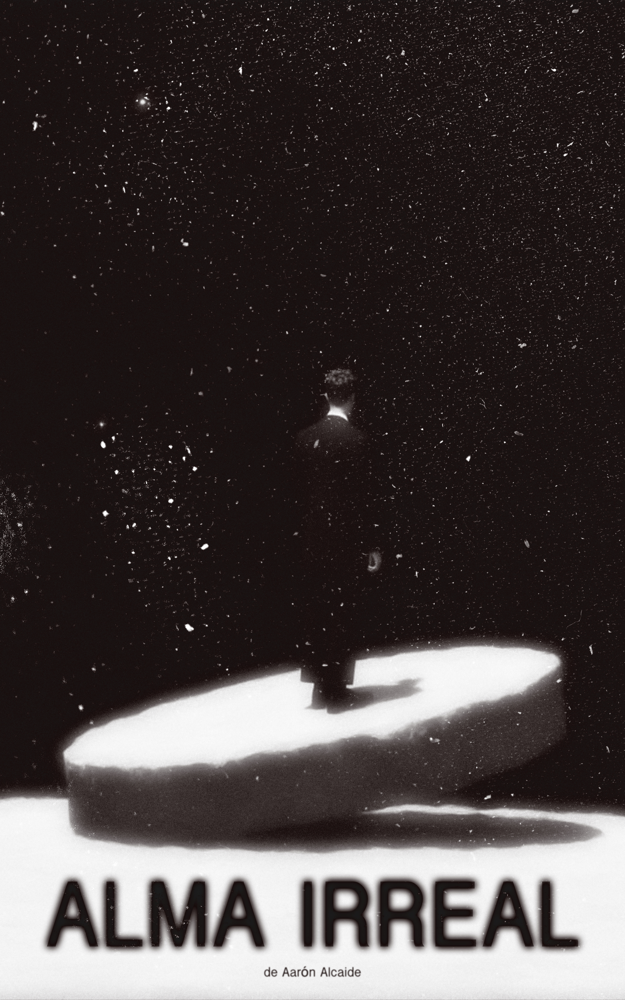
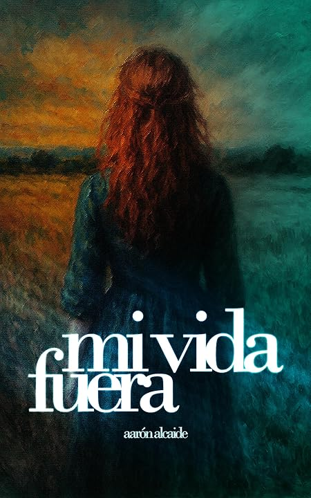
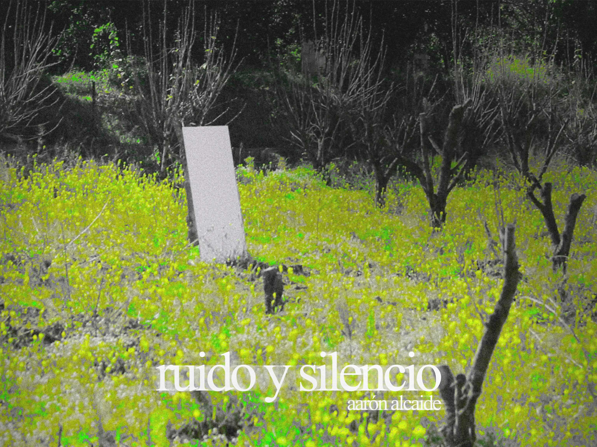

Libros

Alma Irreal
Primer libro

Mi vida fuera
Segundo libro
Proyectos
Exposición Arte Literario 2026 — En proceso
DEVENIR — álbum conceptual (Próximamente)
Cortometrajes

Ruido y Silencio
Textos
Epitafio de un Náufrago
El DEhRON
Leer →
Escribí con la tinta que me sobraba, y cuando no quedaba una sola gota, mi sangre terminó de plasmar el epitafio de mi tumba. Recordé su bello amor, su forma de mirar, mis ojos que brillaban gracias a su luz, su voz cálida que, al susurrarme, derretía el iceberg que una vez había creado en mi interior y que, con el tiempo, ella logró evaporar.
«Sé fuerte en otro lugar que no sea este, no merecemos la pena», puse en mi tumba, en la última carta que le escribí y en el último verso que no conseguí citar por vergüenza. Perdón si fui así; el amor no se encuentra en lugares como el infierno, aunque entré a mirar para pasar el rato.
En mi memoria quedaron sus hábitos raros, su rostro por la mañana, sus discusiones tontas y, sobre todo, su mirada despectiva que mostraba de vez en cuando. Me llenaba el vacío recordarla, casi tanto como observar sus fotos en nuestro banco habitual mientras el sol se ponía. Sabía que, mientras una parte de mí la añoraba, otra se destruía, y mis esperanzas zarparon en dirección contraria a mis decisiones.
Ya no son las mismas. El miedo me había invadido, se estaba aprovechando de mí, y pido disculpas a la esperanza, a la que dejé que se marchara sin siquiera preguntar por qué se iba o adónde iba.
Perdón si lees esto; sé que parezco alguien común que se pasea por el infierno constantemente, pero no, no soy así, aunque pretenda parecerlo. Me escondo, y lo haré hasta que esté bien, hasta que el demonio deje de seguirme, de susurrarme y de hacerme recordar. Ni siquiera rozaré el cielo si no es contigo.
Tu presencia me confundía, y mucho más tu olvido hacia mí. No habíamos pasado por mucho, ni por nada en especial, ni habíamos hecho cosas por los dos; no éramos nadie ni seríamos nadie. Desconocidos que una vez parecían conocerse.
En cuanto a mí, odio hablar de esto, pero necesito escribirlo; me odio por no darte lo que necesitabas, por no estar casi nunca, por estar pendiente de mis cosas. Era consciente de que no era lo correcto, pero seguí. Nadie nunca había dicho que fuera culpa tuya; no lo era.
Sigo disgustado, decepcionado conmigo mismo por perder a mi luz y por perderme. Mi alma vaga sola en una ciudad casi tan vacía como mi corazón, que una tarde de invierno dejó de latir, todo por aquella despedida que apagó el último rayo de luz que reflejaba mi esperanza, la cual guiaba mi corazón hacia buen puerto. Cuando aquel destello desapareció, me perdí en el mar. Ahora navego por mis recuerdos, en completa tranquilidad y en una soledad que quiere ahogarme. Soy un náufrago en el mar del pasado que vivimos.
El Precio del Conocimiento
Leer →
En lo riguroso de la existencia, la línea que separa la muerte de la vida es tan estrecha que una persona común no podría caminar sobre ella. Pero ¿qué clase de equilibrista sería **** si, ante un reto así, no aceptara al menos posarse sobre esa cuerda? La intriga por controlar aquello que solo un dios ha podido gobernar hizo que **** pusiera la mano en el fuego por sí misma, y gritara lo que, en un futuro, sería su propia condena.
Ella creía que podría lograr lo imposible: lo que nadie había conseguido nunca, lo que ningún ser humano corriente había siquiera rozado con la punta de su limitado conocimiento. Resulta tan incomprensible para los simples mortales que, si les pasara por delante, ni siquiera se percatarían. Pero **** no era una mortal común. Su crecimiento se forjó en la disciplina y la rigidez mental, desarrollándose en un entorno oscuro y abstracto, donde todo era complicado y delicado a la vez.
Creció aislada del mundo, apartada de él, pero al mismo tiempo llegó a conocerlo por completo. Un mundo que, con los años, aprendería a odiar: devastado por sus propios habitantes, cruel y, para su mente entrenada, sorprendentemente sencillo de descifrar.
No lo había tocado, caminado ni olido jamás, pero lo conocía como la palma de su mano gracias a los libros: a la inmortalidad escrita hecha realidad.
Comprendió por sí sola que el mundo que tanto quiso visitar de niña era estúpido y absurdo; que sus sistemas, leyes, religiones y demás artificios creados por el hombre no servían más que para vivir encerrados bajo la apariencia de libertad, prisión que ella ya habitaba. Nadie quiere salir de un pozo para volver a caer en él.
Morimos igual que nacemos: con las manos vacías.
Desde múltiples perspectivas, guiada por sus pensamientos e ideologías más sinceras, **** sentenció a la sociedad como una causa perdida. Su conclusión fue clara:
El ser humano es superviviente y egoísta por naturaleza; lleva el egoísmo y el instinto de sobrevivir incrustados en la sangre. Sin embargo, esto no se manifiesta del mismo modo en todos, y por eso el pensamiento humano resulta tan confuso.
Muchos darían la vida por sus seres queridos, pero no es a eso a lo que **** se refiere. Ella piensa en el mundo que los rodea y en el ciclo de la vida dentro de cada familia. Fue así como inventó el término “Egoísmo en futuro presente”, para describir a los humanos de corazón puro que, aun sin permitir que la muerte aceche a sus familiares o amigos, no son conscientes de que el mundo en el que viven se deteriora poco a poco. Y el simple hecho de que una persona no lo cuide provoca que otra deje de cuidarlo también, creando un sinfín de individuos egoístas de futuro presente, responsables directos de la destrucción de sus propios árboles genealógicos.
“No harás de tu mundo un lugar peor.”
Sabio es quien calla y escucha antes de condenar, pues las cosas deben discutirse antes de llegar a una conclusión, y muchos carecen de ese don. Un don es una cualidad que se adquiere, no algo con lo que se nace. **** cree que el crecimiento humano y la educación inculcada desde el nacimiento influyen profundamente en nuestros pensamientos y decisiones a lo largo de una vida tan simple como fugaz. No todo el mundo es capaz de callar cuando debe hacerlo; no todos piensan antes de hablar; no todos juzgan con la misma equidad.
“Callarás y escucharás antes de dictar condena.”
Preludio
Leer →
Un solitario remedio que aparqué en la parte más oscura de aquel parking derrotado y que, a pocas horas del día, recibiría un sol abrumador, incitándome a cometer un gran error. Aquellos rayos solares inevitables terminarían quemándome, y yo sucumbiría a ellos, sin quedar más remedio que afrontar mi pena. La olla se llenó y mi cordura peligraba sobre la cuerda floja de mi paciencia, a la que cualquier experto trapecista que la viera se negaría completamente a subir. Pues el hilo de mis costuras era más grueso que la misma.
Una fiel mañana, tan prometedora como emocionante, del año ochenta y cuatro, desperté con un agotamiento angustioso, síntoma de una horrenda noche que pasé tragándome el deseo de que la velada en la que me encontraba pasara tan rápido como aquellas tardes de primavera en nuestra juventud. Volví a casa tarde, sobre las doce de la noche, y me tumbé en la cómoda cama que me había estado esperando tanto tiempo. No demoré ni medio segundo en traspasar aquella fase en la que no despiertas ni quemándolo todo a tu alrededor, y la paz que recorrió mi cuerpo en ese instante igualaba los deseos de encenderme un cigarro en un momento estresante. Caí sobre la cama, desplomando mi cuerpo contra ella, cerrando los ojos al vuelo y, segundos después, no fui capaz de enterarme de nada: el mundo se apagó y encendí mi descanso. Pero cuando el miedo aterrizó ante mí, mis ojos se abrieron y me encontré rodeado por el estrés y la desesperación.
Me levanté con los ojos llorosos, rojos como el mismo infierno, y un dolor de muelas terrible, causante de la noche anterior, en la cual había estado apretando los dientes continuamente, callando las verdades que nunca quise sacar a la luz, ya que esta misma empezaba a brillar como ninguna otra y acabaría por destruirme. Mi fe irradiaba odio; el odio que me producía no entender nada de lo que me estaba ocurriendo. Mis ideales desaparecían con el tiempo, y eso significaba que terminaría sucumbiendo a ellos.
Salí de casa tras lavarme la cara y, con unas ojeras de búho, caminé con prisa por la mañana nocturna, paciente de mi sangre. Los pasos se hacían notar en el silencio y destacaban entre el sonido del viento moviendo las hojas de los árboles del camino, siendo lo único que podía escucharse a esas horas.
Aquella mañana reinicié mi saber, borrando todo lo anterior y adentrándome en la locura extrema, siendo guiado por el pequeño destello proveniente del final de aquel recto valle rodeado de árboles, el único foco de luz que me conducía entre lo oscuro que se había vuelto todo. Nunca abandoné a la esperanza; ella terminó por abandonarme.
Jamás hablé con mi pasado, tampoco me propuse un futuro bueno, pero el presente que viví me cambió y redireccioné mi vida por un camino. Aún no sé si fue el correcto.
Llegué a mi destino. Aún amanecía, y los tonos rojizos de los rayos solares provenientes del sol atravesaban las nubes y alcanzaban el punto más alto del puente, haciéndose notar y llevándose el protagonismo en una lucha estética contra el paisaje, afortunadamente saliendo victoriosos. Distinguía su abanico de tonalidades, y el horizonte quedaba impregnado por sus colores, haciendo un contraste significativo con los amarillentos y rojizos. El fenómeno del sol asomando entre las montañas solo hacía que apaciguara los problemas y te olvidaras del resto de tu vida, centrándote en las expectativas actuales. Ese toque poético que sentimos cuando el amanecer se plasma delante de nosotros hace que rocemos la sabiduría, incremente nuestro saber y lidere sobre nuestra mente la tranquilidad. No hay mayor sensación que sentirse en paz.
Pero mi misión no era esa.
Mi cara cambió gradualmente y mi anhelo por seguir observando el paisaje se extinguía, dejando la puerta abierta para el mal agüero y el destino que debía afrontar. Contuve mi tranquilidad; dicha volvió al parking de nuevo, y saqué de paseo a mi ira contenida, la cual me tiraba de la lengua continuamente, intentando hablar por mí. Cada vez que ocurría dicho suceso, una simple mueca de repulsión entraba en juego y despreciaba la situación que estaba viviendo. Un roce de desprecio para una aburrida e irritante conversación que escuché la pasada noche en la velada.
Muchas de las cosas habladas me parecían repugnantes, ni siquiera practicables o reales para nosotros. Lo que sí entendí de aquella noche fue que la soledad no lo es todo y que mi mente es capaz de entender algo que no podemos enfocar con simples pestañeos. Para ello, la necesidad de encontrar a alguien es crucial y, si no se alcanza esa compañía, existen otros caminos que pueden llevarte a esa gloria y paz mental tan prometidas, cada una más arriesgada que la anterior. Supe desde el primer momento que terminarían convenciéndome con sus mentiras desgarradoras y que acabarían engañándome. Sabiendo esto, aun así, lo hicieron.
Salté la barandilla del puente y me senté encima de ella, con los pies señalando al río más profundo de nuestra ciudad, sujetándome con toda la fuerza de mis manos y aferrándome a la línea que dividía la vida de la muerte, intentando no morir antes de tiempo.
Desconecté totalmente; mis ojos se cerraron con lentitud mientras mi artificial y calmada respiración bajaba mis pulsaciones. Aquella situación me resultaba familiar. Despertó algo en mí, un viejo recuerdo que se asomaba entre los árboles de mi mente y silbaba a la lejanía para que mi destino se dispersara.
Mi curiosidad y frustración hicieron contener la motivación que lideraba mi fuerza para intentar indagar entre mis recuerdos y averiguar qué era lo que quería recordar. Me encontré en un bello río, a horas de la tarde, con el amanecer en resplandor reflejado en el agua y mis pies mojándose en ella. De reojo alcanzaba a ver a mi padre, pendiente de la caña de pescar que había sujetado entre varias rocas, mientras intentaba repetidamente encender el mechero para prender uno de los puros que fumaba continuamente. Fue un solo instante en el que aquel recuerdo pasó por mi cabeza e hizo recapacitar mi decisión ya tomada. Mi destino estaba en juego, y un simple recuerdo acompañado de un largo suspiro no iba a cambiar nada. Así que continué.
Entre gritos que aumentaban por momentos y que por poco superaban las sirenas de los coches, me levanté. La brisa que pasaba por delante apaciguaba mi sobrepensar y sosegaba el nerviosismo que acumulaba desde la salida de casa y que había arrastrado durante tanto tiempo. Una horda de personas a mi espalda gritaba cosas que no quería entender, queriendo que no hiciera lo que me había propuesto. Un escalofrío recorrió mi cuerpo, haciendo que diera un largo trago de saliva y, aún con los ojos cerrados, arranqué.
El parking se iluminó; yo simplemente reaccioné ante él.
Mi deber era lanzar la minúscula gota de esperanza que recorría mis venas a aquel río y abandonar completamente mi mente para encontrar una nueva vida en otro lugar tan prometedor.
Congelé el infierno, renegando cualquier indicio de suspensión, alcanzando la paz que siquiera rocé cuando parecía estar todo bajo control. Una persona que nota el vacío en su interior y lame la desesperación, sintiendo los pinchazos en la lengua, solo abarca tristeza, haciendo que su actitud sea capaz de congelar el mismo infierno. Se repite la situación, transformando la salida del laberinto en la entrada a otro, adentrando mi mente en un bucle y extinguiendo mis ganas de salir de él. Pues los diferentes obstáculos impiden que mi mente procese cualquier otra cosa, evitan mi concentración y se proclaman campeones ante mí. Les tengo miedo, pero el miedo no es respeto. Nunca hubiera podido escapar. Nadie puede hacerlo. Todo aquel que rechace su trato será condenado a un temeroso final.
Ahogué mi dolor junto a mi persona. Era la única manera de escapar. Y será la única para los siguientes.
Poemas
Pozo del Olvido
Exposición Arte Literario 2026
Leer →
Una gentil búsqueda en mi aforo mental
revive el pésame del inconsciente final.
una tragedia indescriptible
junto a un dolor inaguantable,
trae consigo la muerte.
—¡Fraude! —gritó el inconsciente.
—¡Fraude! — gritó el indescriptible.
—¡Fraudes! —grité.
No rocé de nuevo ese pensar.
Alimentado por medusas,
que volvían de piedra
a sus presas con su mirar.
Rechazando a la muerte,
que la puerta de dicha propiedad
quedaba por cerrar.
Savia esperanza que brotaba de los árboles,
con hojas verdes y grandes,
pero pendientes de un futuro muerto.
Aquella flor marchitó en pena,
la de mi vida.
Ahogada entre disgustos
y a la espera de la paz,
en soledad tranquilizante
y pendiente de un ligero pensar:
¿Qué tiempo hará mañana?
Nunca lo supo,
No le dio tiempo a imaginar.
¿Quién me recordará?
Solo yo,
en mis últimos momentos.
¿Caeré en el pozo del olvido?
Ya me encontraba allí.
La jugosa muerte
grita más fuerte
que la vida satírica.
Contacto